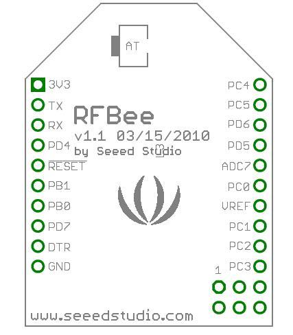
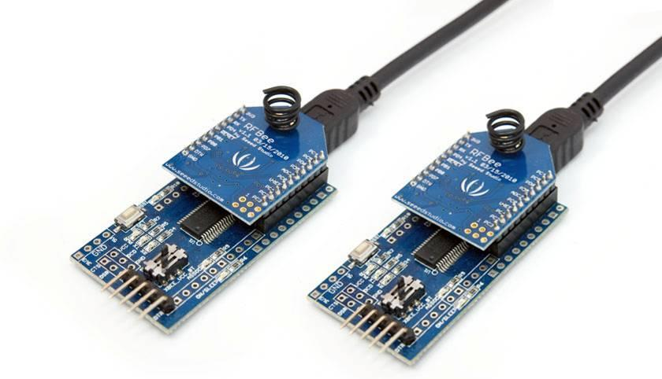
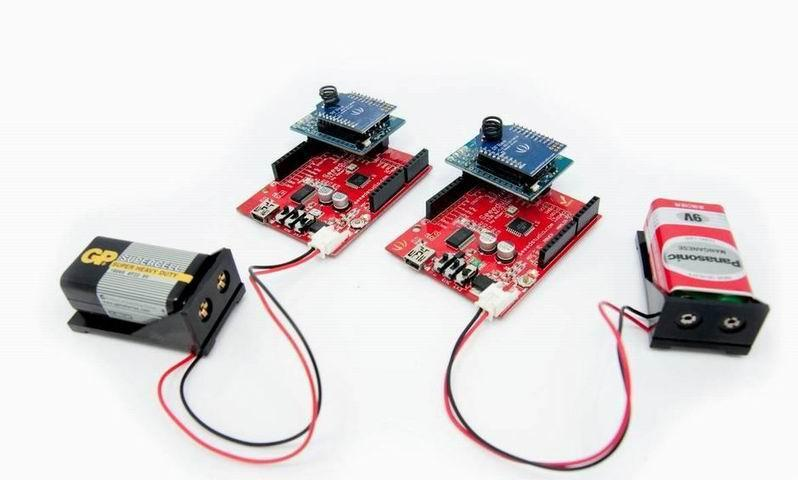
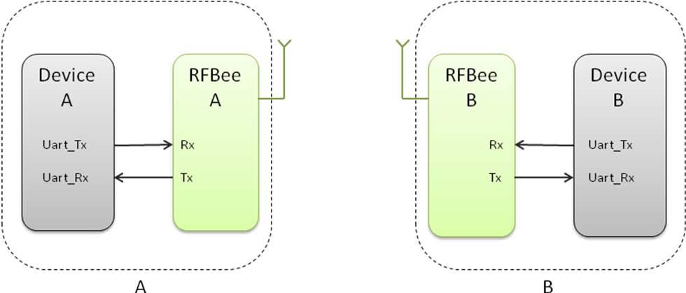
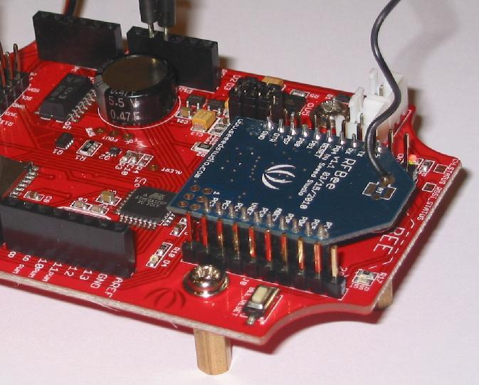
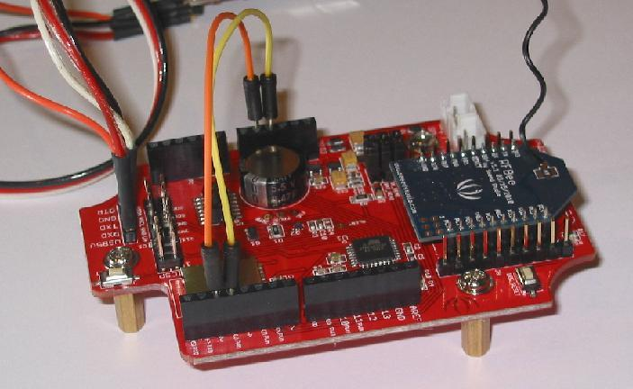
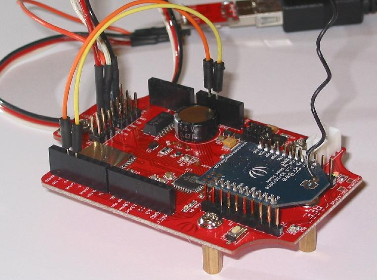

The RFBee is a RF module providing easy and flexible wireless data transmission between devices. It is based on a AVR Atmega168 working as a fully functional Arduino connected via SPI to a TI CC1101 RF transceiver.
http://www.seeedstudio.com/depot/images/rfbee1.jpg

Note:
Only the Rx,Tx, VCC, GND pins are identical to the Xbee. RFbee’s will not communicate with Xbee’s, so RFbee’s need to be used on both ends of the wireless connection.
| Specification | Value |
|---|---|
| Microprocessor | Atmega168(Version < V1.2), Atmega328(Version >= 1.2) |
| PCB size | 24.38mmx32.94mmx0.8mm |
| Indicators | No |
| Power supply | 3.3V |
| IO counts | 9 |
| ADC input | 7(6 multiplexing with IO) |
| Program interface | USB |
| Connectivity | Socket compatible with XBee |
| Communication Protocol | Uart(TTL) |
| Operating Frequency Band | ISM 868MHz & 915MHz |
| Outline Dimension | 24.38mmx32.94mmx15mm |
| Specification | Min | Typ | Max | Unit |
|---|---|---|---|---|
| Input voltage | 3.0 | 3.3 | 3.6 | VDC |
| Transmit Current | 34.5 | mA | ||
| Receive Current | 18.1 | mA | ||
| Idle Current | 5.2 | mA | ||
| Power-down Current | <0.3 | mA | ||
| Operating Temperature | -50 | 125 | °C |

| Pin | # | Pad Type | Description | Arduino Pin Number |
|---|---|---|---|---|
| 3V3 | 1 | Supply input | VCC, +3.3V | - |
| TX | 2 | Output | Uart Tx port | 1(DIO) |
| RX | 3 | Input | Uart Rx port | 0(DIO) |
| PD4 | 4 | Input/Output | ATmega168 PD4 | 4(DIO) |
| !RESET | 5 | Input | ATmega168 Reset port | |
| PB1 | 6 | Input/Output | ATmega168 PB1 | 9(DIO) |
| PB0 | 7 | Input/Output | ATmega168 PB0 | 8(DIO) |
| PD7 | 8 | Input/Output | ATmega168 PD7 | 7(DIO) |
| !DTR | 9 | Input | Used for programming the ATmega168 | - |
| GND | 10 | GND | GND | - |
| PC3 | 11 | Input/Output | ATmega168 PC3 | 3(Analog input)/17(DIO) |
| PC2 | 12 | Input/Output | ATmega168 PC2 | 2(Analog input)/16(DIO) |
| PC1 | 13 | Input/Output | ATmega168 PC1 | 1(Analog input)/15(DIO) |
| VREF | 14 | Input | ATmega168 AREF port | - |
| PC0 | 15 | Input/Output | ATmega168 PC0 | 0(Analog input)/14(DIO) |
| ADC7 | 16 | Input | ATmega168 ADC7 | 7(Analog input) |
| PD5 | 17 | Input/Output | ATmega168 PD5 | 5(DIO) |
| PD6 | 18 | Input/Output | ATmega168 PD6 | 6(DIO) |
| PC5 | 19 | Input/Output | ATmega168 PC5 | 5(Analog input)/19(DIO) |
| PC4 | 20 | Input/Output | ATmega168 PC4 | 4(Analog input)/18(DIO) |
The RFBee can be connected in various ways, e.g.:
Note: the UartSBee device and the XbeeShield are sold separately.



Here is a tutorial on how to use a RFBee transceiver from www.SeeedStudio.com with a RF Explorer Spectrum Analyzer from www.rf-explorer.com.
The RFBee is a nice device which accepts some simple AT ASCII command strings to do some basic configuration. An ideal tool to experiment with digital RF transmission.
This example code is in the public domain and available here and tested in Arduino IDE v0022.
|  |  |  |
You may use a Seeeduino Stalker v02b to host the RFBee. Just plug the RFBee into the XBee slot. You also need a way to connect your Stalker to your PC to upload the sketch, I personally used a CP2102 USB bridge, you can use other USB bridges including the UartSBee recommended by Seeed.
Alternatively, you can do the same with an Arduino compatible board but will have to connect the RFBee with RX/TX of the CPU using a XBee 2mm connector, which may not be easy to get at your local shop.
Finally, you will need two jumper cables to connect Stalker port 2 to GND and port 3 and GND. We will use them as simple switches to configure the RFBee in different ways. Feel free to check the trivial sketch code to better understand how it works, and make your own changes.
Some familiarity with RFExplorer and RFBee user manual is required, otherwise some steps may not be obvious to you.
After you upload the script in the Stalker, power off the unit completely so both ATMegas (Stalker's and RFBee's) resets at the same time and you start from a clean state.
Power the unit back, it will start transmission after Stalker led blinks 6 times.
RFExplorer will show received power and frequency. Play with antenna orientation till you get the best power response. In this tutorial we will use RFBee in 915Mhz, but equivalent results will be obtained in the 868Mhz. Take a look in the sketch code and uncomment the couple of lines coded for 868Mhz if your RF Explorer is in that band.
More details, please visit micro.arocholl.com.
You can update the RFbee firmware using the Arduino IDE using the procedure below. This procedure assumes the use of UartSB as this is the easiest way to connect a RFBee to a PC, see the section on Hardware installation for different ways to connect.
>>RFBee firmware: http://code.google.com/p/rfbee/downloads/list
If you have other questions or other better design ideas, you can go to our forum or wish to discuss.
| Revision | Descriptions | Release |
|---|---|---|
| v1.0 | Initial release | Mar 05, 2010 |
| v1.1 | revise release | Aug 27, 2010 |
| v1.2 | Change MCU to Atmega328 | Oct 10, 2015 |
{kind=link}